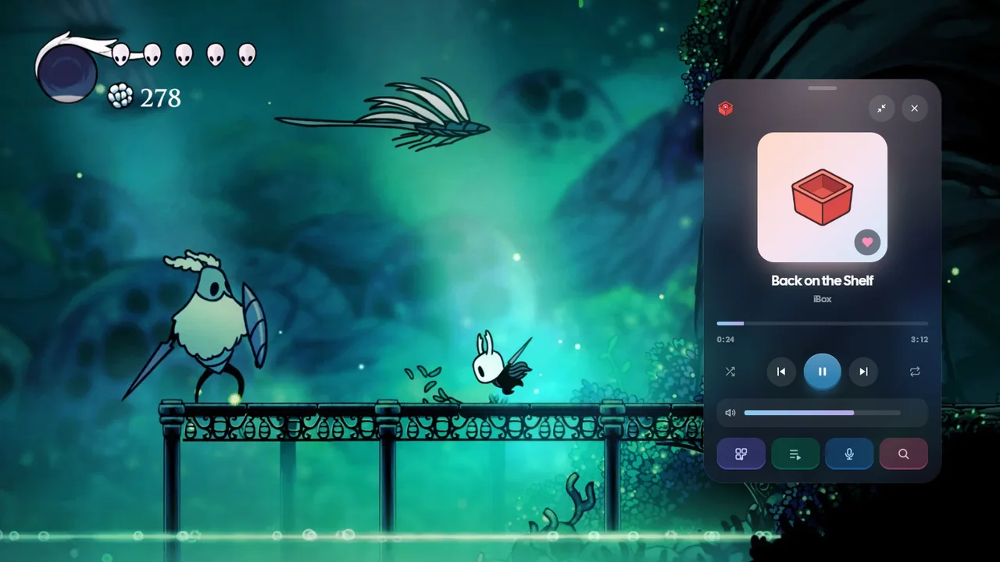
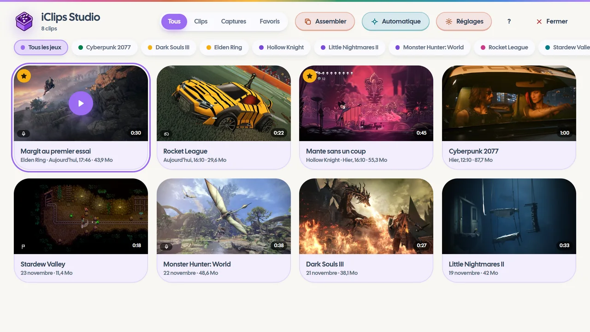

Plugins.
Des extensions pour iBox, signées par leur éditeur et installées en un clic depuis Paramètres › Plugins.
-

 Music in the BoxVotre musique, par-dessus votre jeu.YouTube Music ou n’importe quel lecteur de Windows, à Alt+C.Découvrir
Music in the BoxVotre musique, par-dessus votre jeu.YouTube Music ou n’importe quel lecteur de Windows, à Alt+C.Découvrir
-

 iClipsLe studio de vos clips de jeu.Dites « Clip ça ! », coupez, passez en vertical, glissez dans Discord.Découvrir
iClipsLe studio de vos clips de jeu.Dites « Clip ça ! », coupez, passez en vertical, glissez dans Discord.Découvrir
D’autres plugins arrivent.
Aperçu d’iClips : séquences des bandes-annonces et captures officielles des fiches Steam des jeux, propriété de leurs éditeurs.